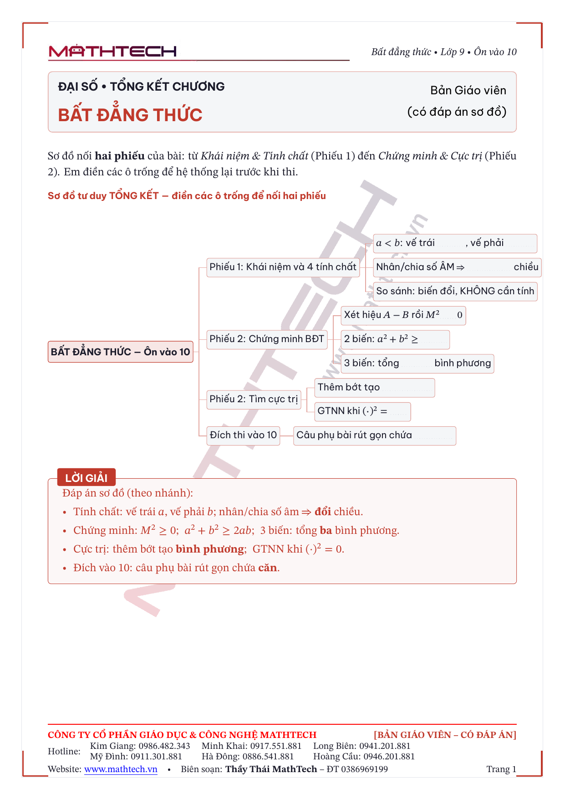

Một dây chuyền đã chạy thật: một nguồn → ba bản in chuyên nghiệp, có kiểm soát chất lượng. Mọi con số gắn nhãn đo thật hoặc ước tính.
Mở màn · câu chuyện của chúng ta
Xe đạp → xe máy → giờ lên cái gì để đi xa?
Sếp từng nói: năm kia mình là xe đạp, 2025 đã lên xe máy — nhưng vẫn quanh Hà Nội. Sáu cơ sở Hà Nội dùng chung một bộ đề, một cách học nên rất hợp. Cái ghì mình lại là khi muốn vươn ra tỉnh khác: đề thi, ma trận, cách học mỗi nơi một kiểu — soạn tay thì gần như phải làm lại từ đầu.
Hồi 1 · Vấn đề
Soạn tay — làm 3 lần, mà vẫn phải ngồi trông
Tốn 3 lần công — phiếu HS, bản đáp án GV, slide: mỗi thứ gõ lại từ đầu, phải ngồi canh từng bước.
Sửa 1 quên 3 — đổi phiếu, quên slide → các bản lệch nhau; công thức rớt font khi đổi máy.
Không ai gác cổng — sai đề / sai đáp án chỉ lộ khi đã in, đã phát cho HS.
Một phiếu tử tế phải khác hẳn. Khác thế nào?
Hồi 2 · khác biệt của phiếu
Một nguồn → ba bản; HS để trống · GV có đáp án
📄
Phiếu học sinhđể trống, có bảng tự điền
📕
Sổ tay giáo viên+ lời giải đỏ + mẹo
📊
Slide trình chiếuxem slide sau
Phiếu học sinh — ví dụ chừa chỗ trống + bảng đại lượng điền được, ẩn lời giảiSổ tay GV — cùng trang, thêm hộp LỜI GIẢI đỏ + MẸO SƯ PHẠM; footer [SỔ TAY GIÁO VIÊN — CÓ ĐÁP ÁN]
Hai bản sinh từ đúng một filegiai-bai-toan-lap-pt.json. Bản GV = bản HS + (mỗi chặng) một hộp lời giải đỏ và một hộp mẹo điều phối — máy tự chèn, không gõ hai lần.
Hồi 2 · bản thứ ba
Bản thứ ba = slide chiếu, cùng nguồn — không dựng riêng
Slide Beamer 16:9 — chữ & công thức to, đọc từ cuối lớp; sinh từ cùng file

Phiếu tổng kết chương — sơ đồ tư duy (mindmap); bản GV điền sẵn đáp án đỏ
Sửa một chỗ ở nguồn → cả ba bản tự cập nhật, không bao giờ lệch. Bên trong mỗi phiếu được dựng thế nào?
Hồi 2 · bên trong một phiếu
Mỗi phiếu đi đúng 5 chặng × 4 tầng — và “Tôi–Cùng–Em làm”
TÔI LÀMGV làm mẫu, lời giải mẫu
CÙNG LÀMví dụ chừa chỗ trống + bảng điền được
EM LÀMbảng trống hẳn, HS tự lập
4 tầng mỗi phiếu: onclass (lõi trên lớp) → btvn → extend (thang + gợi ý, máy kiểm) → ★ Thử thách. Bảng điền thật: “Thầy và trò cùng điền bảng (gọi năng suất dự định là x)”.
Hồi 2 · khác gì phiếu cũ
So với bản PDF làm tay trước nay
Phiếu PDF cũ (làm tay)
Một mạch phẳng, một mức khó cho cả lớp.
Đáp án để rời / một file khác — dễ lệch.
Không bảng điền, không slide kèm.
Sai đề / sai đáp án lọt tới khi in.
Phiếu hệ thống (cùng 1 nguồn)
5 chặng × 4 tầng — phân tầng, HS giỏi có bài cày tới.
Sổ tay GV tự sinh lời giải đỏ + mẹo, luôn khớp phiếu.
Bảng điền được + slide đồng bộ sẵn.
6 cổng + SymPy chặn sai trước khi in.
Nội dung do giáo viên (+ Claude) soạn. AI soạn — tin được không, máy chạy thế nào?
Hồi 3 · máy chạy thế nào
5 bước — chỉ một bước là chất xám người
Chỉ ô đỏ (điền nội dung) tốn chất xám — đúng việc của giáo viên. 4 bước còn lại máy lo; bước validate là cổng bắt buộc → AI soạn vẫn không lọt sai. Nhưng vì sao dám giao rồi đi?
Hồi 3 · vì sao dám giao rồi đi
Như robot tập đi: ngã hàng trăm lần — rồi tự đứng
Phần “vấp–ngã” đã xảy ra trong lúc dựng cỗ máy: mỗi việc nhỏ tôi vấp được nâng thành một bước có gác cổng. “Đứng vững” đó đo được, không nói suông:
41/41
Bài test tự động PASS
pytest
6+ SymPy
Trình kiểm tra gác cổng
đếm thật
28
Snapshot — lỡ hỏng lùi được
đếm thật
~20giây
Máy ráp 3 PDF / bài
đo thật
41tuần
Khung phủ cả năm
đếm thật
0đ
Phần mềm — build/in
mã nguồn mở
Hồi 3 · lưới an toàn
Máy giải lại độc lập — bắt lỗi mắt người sẽ in nhầm
# SymPy tự lập ma trận dạng toàn phương, kiểm nửa-xác-định-dương
Đề: a² + b² + c² ≥ ab + bc + ca (bài "trùm cuối")
Verdict: OK — Dạng toàn phương PSD (trị riêng [3/2, 0]) ⇒ ≥ 0
# So khớp tập nghiệm người ghi vs máy giải
Đề: x² − 5x + 6 = 0
• người ghi {2, 3}: OK — Khớp tập nghiệm ['2','3']
• người ghi {2, 5}: FAIL — Lệch: người thừa ['5'], máy còn ['3']
Vì có lưới này nên không phải ngồi soi từng dòng. Máy tự chứng minh lại, lệch dù một nghiệm là FAIL — chặn trước khi tới HS. Phiếu cũ không có lưới nào. Lưới này, dây chuyền này — đáng giá bao nhiêu?
Ví dụ thận trọng (mức thấp 45’): 45’ × 100 bài × 1 GV ÷ 60 = 75 giờ/năm/GV ≈ gần 2 tuần làm việcước tính
Đổi thương hiệu cả kho 1 dòng: logo/hotline/màu ở một file → rebuild in lại tất cả, không sót. Phần nghĩ nội dung giữ nguyên. Công cụ miễn phí.
Hồi 4 · tài sản tổ chức
Học liệu thành tài sản của tổ chức, không còn file rời
Làm tay hôm nay
Mỗi phiếu là tài sản cá nhân người soạn.
Người đi → kho mục dần, khó dùng lại.
Không tra cứu, không đổi áo hàng loạt.
Hệ thống này
Mỗi bài là dữ liệu có cấu trúc → tài sản chung, Git lưu vết.
Tái dùng · đổi áo (rebuild) · sinh biến thể A/B.
Kho PDF/Word cũ = nguyên liệu, chuyển dần, không đập đi xây lại.
Đây cũng là lời đáp cho dấu hỏi đầu buổi — “đi cả nước bằng gì?”: một kho có cấu trúc, nhân ra mọi tỉnh được.
Hồi 5 · không tô hồng
Nói thẳng: rủi ro & cách kiểm soát
Rủi ro thật
Mức
Cách kiểm soát
AI sinh sai (toán/đề)
Có thật
SymPy giải lại + 6 cổng + GV duyệt → chặn trước khi in
GV ngại terminal / VS Code
Cao
GV làm trong chat với Claude; build do đầu mối/CI
Phụ thuộc 1 người kỹ thuật
Có thật
Đào tạo ≥2 đầu mối + quy trình đã tài liệu hoá
Số hoá kho cũ tốn công
Có thật
Làm dần, ưu tiên tuần đang dạy; file cũ chạy song song
Trọn 1 bài mất ~20–30′
Có thật
Chạy nền khi GV đi dạy; build/in chạy KHÔNG cần AI
Khung đúng: AI nháp · máy kiểm · người chốt — không phải “AI thay giáo viên”.
Hồi 5 · kiến nghị
Đề xuất
Đề nghị duyệt LaTeX tự động làm chuẩn sản xuất học liệu Toán 9 + cử 2 đầu mối vận hành.
GĐ 1 · đang chạyhoàn thiện tuần đang dạy; số hoá kho cũ dần (file cũ vẫn dùng song song)
GĐ 2đào tạo ≥2 đầu mối + quy trình duyệt cho GV
GĐ 3GitHub web + CI tự build → GV khỏi đụng terminal; mở rộng lớp/môn
1 thuê bao AI dùng chung · pipeline build/in miễn phí · đã chạy thật (41/41 test).
Kết · quay lại câu hỏi đầu buổi
Cái “?” đó chính là chiếc máy bay này
Vì sao ngại ra tỉnh khác
Mỗi tỉnh một định dạng đề thi, ma trận khác.
Cách dạy, cách học mỗi nơi một kiểu.
Làm tay: tỉnh mới = gần như làm lại từ đầu.
Vì sao công cụ này cất cánh được
Tách nội dung ↔ khung trình bày: mỗi tỉnh chỉ cần một khung đề riêng, vẫn chung một động cơ.
Cổng chất lượng giữ chuẩn đều nhau mọi nơi.
Git: nhiều GV nhiều nơi cùng đắp một kho.
Giáo viên lo nội dung — máy lo phần còn lại. 6 cơ sở Hà Nội → cả nước: thay đường băng từng vùng, không đóng lại cả chiếc máy bay.
Thầy Thái MathTech · 0386969199
Phụ lục
Phụ lục — bung khi được hỏi
P1 · Sơ đồ kiến trúc bên trong (6 cổng + rebuild)
P2 · Output thật của lệnh validate
P3 · Chất lượng in & bảo mật XeLaTeX
P4 · Tách phiếu / phân tầng theo buổi
P5 · Bảng số liệu đầy đủ
P6 · Cộng tác & lịch sử trên Git
Phụ lục P1 · bên trong nhà máy
Một nguồn JSON → qua cổng → khuôn in → 3 bản
Sai một dấu cũng không lọt: hỏng thì cổng trả về người sửa, qua hết mới mở khoá in. validate-all gác cả kho; rebuild lan thiết kế ra mọi bài.
Phụ lục P2 · gác cổng
6 cổng tự kiểm trước khi in — output thật
$python -m src.main validate bdt.json
▶ Đang trọng tài 'bdt-chung-minh-va-cuc-tri'
• latex_sanitizer: OK
• schema_validator: OK
• difficulty_gate: OK
• visual_linter: OK
• gradient_gate: OK✓ Gói bài qua cổng S2.